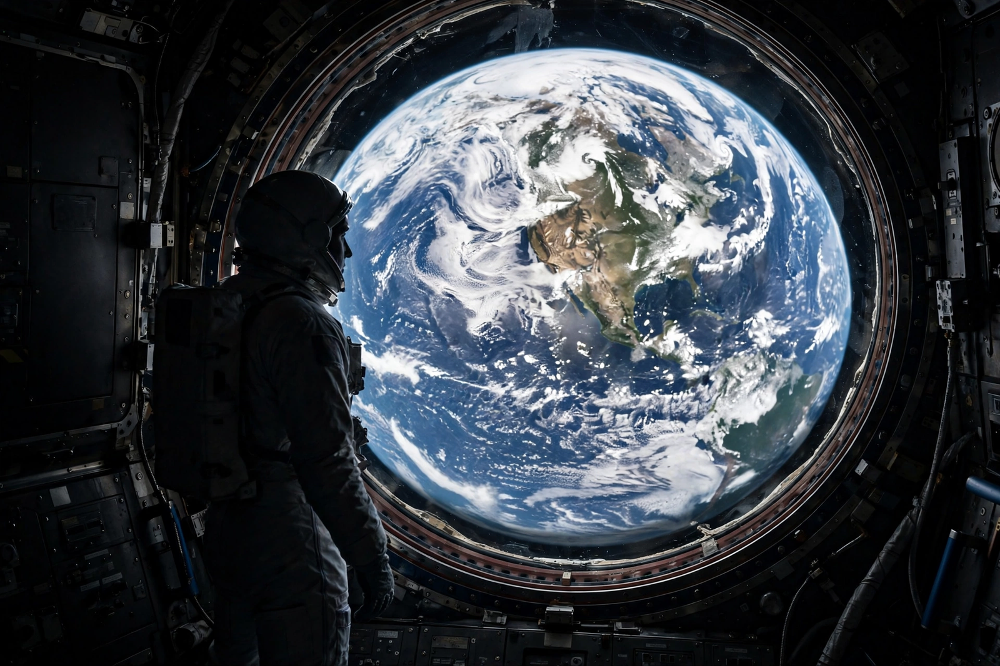

Overview effect
From Wikipedia, the free encyclopedia
| Overview effect | |
|---|---|
| Term coined by | Frank White (1987 book) |
| Phenomenon | Cognitive shift reported by astronauts viewing Earth from space |
| Related images | Earthrise, Blue Marble |

The view that changes people.The overview effect is a cognitive shift reported by astronauts and cosmonauts who see Earth from space: a sudden, often lasting apprehension of the planet as a single, fragile, borderless whole — and of humanity as one crew. The term was coined by space philosopher Frank White, who interviewed dozens of fliers for his 1987 book of the same name.
Testimonies converge across nations and decades: Yuri Gagarin's wonder at Earth's beauty, Earthrise photographer William Anders's 'we came all this way to explore the Moon, and the most important thing is that we discovered the Earth', and the flat statement of many station residents that national borders are invisible and the atmosphere looks 'paper-thin'. Arthur C. Clarke and Carl Sagan channelled the idea to the public; Sagan's Pale Blue Dot meditation is its literary monument.
Study and use
Researchers have measured the effect with interviews and, recently, virtual-reality simulations used in therapy and climate communication; space-tourism operators cite it as their product's deepest value, and William Shatner's tearful 2021 account — grief as much as joy — became its most-discussed modern testimony. Sceptics note the sample is small and self-selected, but the consistency of reports across cultures and eras keeps the concept central to how spaceflight justifies itself.